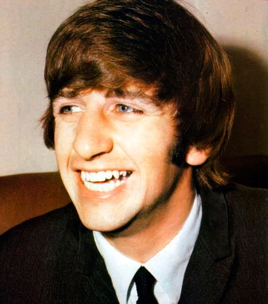

George Harrison
Ringo Starr a fost bateristul trupei The Beatles și unul dintre cei patru membri fondatori.
Stilul său distinctiv de a cânta la tobe a contribuit la sunetul caracteristic al trupei.
Ringo a adus o energie ritmică unică și o soliditate în interpretarea sa, ceea ce a dat o bază solidă pentru compozițiile trupei.
El a fost recunoscut pentru simplitatea și eficiența sa în redarea ritmurilor, ceea ce a contribuit la popularitatea pieselor trupei.
Charisma sa și personalitatea jovială l-au făcut unul dintre membrii preferați ai fanilor The Beatles.
Deși nu a compus atât de multe piese ca Lennon și McCartney, Ringo a avut câteva hituri notabile, precum "With a Little Help from My Friends".
Vocea sa distinctă a fost adesea prezentă în înregistrările trupei, oferindu-le un vibe aparte.
Ringo a fost unul dintre membrii care au contribuit la creația atmosferei prietenoase și unite în cadrul formației.
Talentul său ca actor l-a dus și către cariera cinematografică, jucând în mai multe filme în timpul existenței trupei.
Ringo Starr rămâne o figură iubită și respectată în istoria muzicii, fiind recunoscut ca unul dintre cei mai influenți și carismatici bateriști din toate timpurile, aducând un aport semnificativ în evoluția trupei The Beatles.